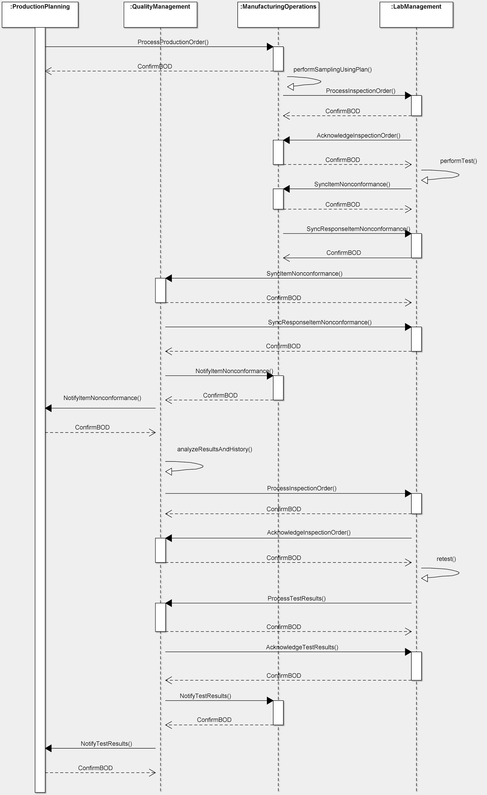

Scenario 71 - In-process Inspection71.0 OverviewScenario #71 describes the integration for business software involved with the process of performing in-process inspection of items during the manufacture of a product. This worst-case scenario depicts a series of manufacturing process control steps in the context of a ProductionOrder. ManufacturingOperations creates an InspectionOrder based on the sampling plan and the manufacturing process is stopped due to a quality concern identified in an ItemNonconformance report, confirming the out-of-control situation. After reviewing calibration history, QualityManagement manages the exception by requesting a retest and ultimately releasing the production hold. ProductionPlanning is notified of the status by QualityManagement throughout the exception. Much of the data exchange is automatic, with the exception of QualityManagement intervention when the item nonconformance is received.The purpose of this scenario is to describe the participants in a mainstream business process, and to illustrate how the business systems of those participants can be integrated through messages exchange to realize the goals of that business process. This scenario is not meant to be the only model for integrating customer, supplier, and third party lab applications. It is simply one model that may be used to guide one's own integration efforts. Many applications contribute to the generation of InspectionOrder lab requests and the resulting TestResults. Some components involved with the distribution of lab requests and TestResults are:
71.1 Scenario DiagramThe scenario below contains the participants involved in the interaction, the dialog flows or conversation between them, certain assumptions about the sequence of events, and assumptions about the technical approach, for example, whether a publish and subscribe or a query and response model is used for the exchange of information. This is a model to be used as a design recommendation, not a required approach.This is a model to be used as a design recommendation, not a required approach..  71.2 AssumptionsThis scenario assumes a loosely coupled, asynchronous approach with transaction management required but not explicitly defined.This scenario describes a model for one or more manufacturing components integrating with QualityManagement, ProductionPlanning, ManufacturingOperations and LabManagement components. The environment for this integration is typically within a single external organization. Physical movement of samples to the lab are not included in this scenario, and assumed to be a normal business activity. Also not in scope in this scenario is the depiction of Smart Manufacturing techniques that integrate sensors and other instruments for automatic data collection, statistical process control, and other manufacturing analytics. In addition, there may be instances where all of the data is contained in the documents and other instances where additional binary information accompanies the InspectionOrder, ItemNonconformance, and ProcessTestResults, most commonly images or geographic files. The diagram and descriptions of the business process for this scenario focus on how a successful execution of the business process should take place. There may be several places in this business process where errors can occur and corrective actions must be instituted. Since such actions are implementation dependent, detailed descriptions of the errors that might occur and the corrective actions that might be taken in response will not be provided for this scenario, although general information about errors that might happen and how they might be dealt with may be provided. 71.3 Participant DefinitionsThis scenario contains the following participants: QualityManagement, ProductionPlanning, ManufacturingOperations, and Laboratory Management.The definitions and details of these applications are left to the designer but are assumed to contain the functionality as defined by what is commonly sold in the commercial marketplace today. This definition is broadly accepted by the scenario designers and is a direct result of the decision not to define how the processing takes place within any individual application. Typical capabilities of these participants are described:
The most important factors in defining these participants is to ensure that an integration designer can communicate the requirements precisely enough to specify and design the integration processes needed and their interrelationships. Note that the evolution of eCommerce has yielded independent trading exchanges and other intermediaries between business operations and inventory management providers. Requirements and operations for intermediaries should be similar to direct links between the two components 71.4 Business Workflow (Sequence)The business workflow is graphically represented by starting at the Scenario top and reading from top down and from left to right. The arrows in a sequence diagrams shows the message exchanged, and the response to the message. A ConfirmBOD provides an acknowledge to the initial request that the original request was received and understood as a valid. The Acknowledge(noun) message indicates that the transaction was processed (committed), and a business person has reviewed and provided information related to the next step (accepted, rejected, etc.).The exchange of OAGIS BODs such as the ProcessInspectionOrder, SyncItemNonconformance, and ProcessTestResults may follow several different workflows, depending on if it fits within discrete manufacturing (e.g., electronics) or process manufacturing (e.g., animal or human food). The process depends on the type of product or products involved and the entities exchanging the documents. The sequence diagram illustrates the data exchanges involved within the business process.
An alternate scenario using statistical process control (x-bar/ s charts) to trigger the sampling process with a SyncItemNonconformance BOD confirming there is a problem. In this alternate scenario, Manufacturing could recalibrate the manufacturing equipment, and further identify if it is possible to rework product, or if they have to scrap product. This alternate scenario is more complicated, involving additional inventory allocation and execution of manufacturing re-run until the process yields satisfactory test results. Other scenarios are feasible, especially with advances in sensors and other equipment that bring more testing capabilities onto the plant floor, with less reliance on laboratory services. 71.5 Exception HandlingException handling is highly localized as the result of how business capabilities are implemented including the deployed infrastructure, management and business rules. As such, this section of the Scenario documentation is planned to be used as a guide to help understand the additional intent of these Scenarios. If no exceptions are noted here, then it can be assumed that the Scenario designers agreed that the Scenario is straightforward and has no additional needs:
Copyright OAGi 2017 - All Rights Reserved -- OAGIS release 10.4 - Document Number: 20170420-71 |